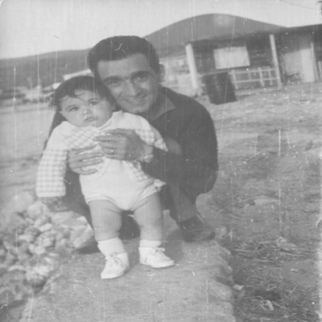

1959’da annemle nişanlanırlar. Nişan hikâyeleri ilginç. 1960’ta evlenirler.
Demirci Belediyesi Nikâh Salonu (18 Eylül 1960)
Annem ve babam eskiden komşular. Bahçelerini bir duvar ayırır. 1955’te annemler, Demirci’nin güzel bir yerinde, iki katlı, bahçesinde havuzu olan bir eve taşınırlar. Babaannem (Paşameynlerin Emine) orada ziyaretlerine gider. Dönüşlerinde de, babama annemi över, durur. “Şöyle cevval, böyle efendi” falan. 1958’de annemi bir terzi ister, Şerif Dedem vermez, bir yıl sonra o aşkla tekrar isterler. Dedem, “Olur; ama İzmir’de amcamlardan bir fikir alayım” der. O sırada olay Demirci’de duyulur. Babam, Saime Yengem, onun ablası fotoğrafını gördüğünüz evde sohbet ederlerken haber gelir. Babam “Versinler Gülten’i, ne var ki onda” diye yorum yapar. Sonra köftelik kıyma alıp (bu gereksiz ayrıntı için özür diliyorum; ama almış işte) bağa gider. O dönemde, yazın, insanlar Demirci’de bağlarına gider iki-üç ay orada “köşk” adı verilen kerpiç evciklerde kalır ve bağ bahçeyle uğraşırlarmış. Babaannem de yeni iki aylığına bağa gelmiş. Beraber köfte yapıp yerlerken (ayrıntı için pardon) babam, “Gülten’i veriyorlarmış” der. İsteyen terzi çocuk da babamın arkadaşıdır. Babaannem, “Sen istiyor musun Gülten’i?” diye sorar. Babam, annemi en son, akrabamız Sumru Teyzelerde görmüş ve çok beğenmiştir. “İstiyorum” der. “Hadi o zaman” der babaannem, Demirci’ye yola koyulurlar. Yolda içine peynir basılan büyük bir küp alır babaannem. Eve geldiklerinde Saime Yengem merakla sorar, “Niye geldiniz?” diye. Babaannem, “Peynir almışsınız, küpe basmazsanız bozulur, size küp getirdim” diyerek onları ikna eder. Tilkiyi görüyor musunuz? Olay duyulursa rezil olmayalım diye ne planlar yapmış.
Babaannem doğruca Tatarların evine gider. “Tatarlar” annemler oluyor. Evde beş kız çocuğu ve Fatma Anneannem. Fakat kızlar bu ikisini yalnız bırakmazlar bir türlü. Babaannem bir ara fırsatını bulur, “Gülten’i bize versenize” der. Hiç Allah’ın emri Peygamber’in kavli falan yok. Anneannem “Biz onu verdik” deyince “Ne olur bize verin” der, komşudan un istiyor sanki. “Biz bir konuşalım” der Fatma Hanım. O sırada bir de bankacı devreye girer, dünürler üç olur. Bankacı için Belediye Başkanı Mehmet Ünal, terzi için Çerkez Hakkı ve ekibi baskı yapmaktadır. Anneannem büyük kızı Gülten’e sorar. O da babamı istediğini söyleyince söz kesilir. Yıl 1959. Babam son sınıfta olduğu için bir yıl beklerler. Bir yıl sonra düğünleri olur. Nikâh salonunda gelin, damat dâhil herkes tahta sandalyelere oturmuş. Fark ettiniz mi bilmiyorum, nikâh masasının üstünde bir halı serili. İkinci Dünya Savaşı biteli on beş yıl olmuş.
Tüm bu tesadüfler olmasa bugün ben hayatta olmayacaktım. Belki de bir başkasının hakkını yemiş olduk.
Aynı yıl İzmir’deki Güzelyalı Hava Lisesi’ne Türk Dili ve Edebiyatı öğretmeni olarak atanır. Balçova’da bir ev tutarlar, 1961’de ablam Bengül doğar. Ablam diş hekimi olarak doğmuş, evet.
Hiç bu kadar güzl bir anne gördünüz mü? Gözleründeki ışıltı, kalbindeki insanlık aynısıyla devam ediyor. Kucağındaki Bengül Ablam onunda bakışlarındaki zeka aynısıyla var.
1965 yılı Mart ayında annemin babası Şerif Dedem rahmetli olur. Geride, biri okula başlamamış beş kız ve anneannemi bırakır. Benim doğumumdan dört ay önce.
1965’te Güzelyalı Hava Lojmanları’nın bahçesinde, 23 Temmuz’da 24’e beş kala ikinci bebeğin bağrışı duyulur. Dışarıda babamla bekleyen yaşlı adam sesi duyunca “Bu erkek” demiş. Artık nasıl gür bir sesse! Yalnız sesin gürlüğü o ilk bağrışmada gitmiş.
Harbiden doğru çıktı.
Bundan sonrası heyecanlı; çünkü artık kendi tespitlerimi anlatabileceğim.
Tespitlerim:
İlk tespitim şu:
İlk beş yıla ait hiçbir şey hatırlamıyorum.
1966’da aslında planlamazken üçüncü çocuğa hamile kalır annem (farkındaysanız o çocuğun adını bile anmıyorum). Doktora “Çocuğu aldıralım” düşüncesiyle giderler. Doktor Mehmet Üncü ikisini ikna eder. 1967’de Sanem doğdu. Daha sonra ablamla o doktorun arabasını çizdik, lastiklerini indirdik; ama ne yapsan hırsını alamıyorsun ki, yaptığı yanına kaldı. Doktor değil misin, al çocuğu sen, cebine bak, sana ne el âlemin çocuğundan.

İzmir (1966)
Tahminen Güzelbahçe. Narlıdere civarları. O tombul tavuk benim. Herhâlde bir veya bir buçuk yaşındayım, yeni yeni yürüyor gibiyim.
Babamın 1967’de Konya II. Üs Öğretim Başkanlığı kayıt subaylığına tayini çıktı. 1971’e kadar Konya’da kaldık.
Önemsiz bir ayrıntı, 1967’de kız kardeşim Sanem doğdu. O da Ege Üniversitesi’nde öğretim görevlisi olarak doğdu. Evet.
İşte buradan itibaren kitabın tadı geliyor; çünkü hatırlamaya başlıyorum.
İlk olarak salonda, yerde büyük gri bir el dokuması Demirci halısı hatırlıyorum, iki çapraz köşesinde birer büyük gül motifi olan. Bu halı bizimle ülkeyi dolaştı.
Sonra üç tekerlekli bisikletimi hatırlıyorum, Ali Amcam bana devamlı, “Şerif bunun tekerlerini yağlarsan hızlı gider, bu çok yavaş” diyerek verdi coşkuyu. Nasıl yağlanacağını da detaylı anlattı. Annem lojmanda alt katta misafirlikte, ben ısrarla “Anne eve gideceğim, çok sıkıldım” diyorum, sonunda dayanamadı verdi anahtarı, hep anlatır “Nasılsa boyu yetişip de kapıyı açamaz diye düşündüm” der. Ben saniyede kapıyı açıp maymun sessizliğinde içeri süründüm. Buzdolabından bir kutu Sana yağını çıkardım, bisikleti salonun orta yerine getirdim, tekerleklerin etrafını amcamın tarif ettiği şekilde yağladım, malzemeden de çalmadım ki hızımız müthiş olsun. İşi tamamlayıp bisiklete oturdum tam pedalı çevirecekken annem yedek anahtarıyla girdi ve beni yakaladı.
Babam pazara gidip köylüyle, satıcıyla sohbeti, insan tanımayı ve eve elleri dolu gelmeyi çok sever. İhtiyaç bir kiloysa dört, beş kilo alır. Gerekli gereksiz ne varsa. “Hadi canım” demeyin.
Canlı hindi, canlı ördek bunlara net örneklerdir.
Bunlar lojmana geliyor. “Biraz besleyip sonra yeriz” duygusallığıyla alınan hayvanlar.
Bir gün elinde bembeyaz bir tavşanla kapıda göründü babam (sadece besleme niyetiyle). Biz o an bırakın lojmanı, bırakın Konya’yı, bırakın Türkiye’yi, bırakın sigarayı dünyanın en mutlu çocuklarıyız. (Aradaki sosyal mesaj nasıl ama?)
Yalnız satıcı tavşanın kemirgen bir hayvan olduğunu babamlara söylememiş. Hayvansa kemirgen olduğunun tam olarak farkında. İçine koyduğumuz yeşil, delikli plastik sepeti kemiriyor, çıkıyor ve ne bulursa kemiriyor. Kemirgenliğinin dışında işergen bir hayvan ve çişi de kokargan. Neyse, ev ahıra döndü ve babam bizim yalvarmamıza rağmen, iki subay arkadaşıyla tavşanı geri vermeye gitti. Köylü kadına “Biz buna bakamadık, parasını geri istemiyoruz bunu al” demişler. Kadın “İstemiyorum kardeşim bunlar çok doğurgan ev tavşan dolu.” “Allah aşkına al”, “Almam”, “Al.” Bakmışlar olmayacak. Birisi kadını oyalarken diğeri sepeti açıp tavşanı içine atmış, kadın tavşanı kapıp peşlerinden, pazarda devletin subayları (Allah’tan siviller) kaçarak kurtulmuşlar.
Konya’dan üç tekerlekli dolmuşları, triportörleri, karşı komşumuzun yaramaz oğlu Gökhan’la çöpe atılan nohutları toplayıp yememizi, “Koyunlar yiyor, lezzetlidir” deyip otlayışımızı; Şenay, Nuray, Zehra ve Zerrin Teyzemin örüp bize beyaz bir çuval içinde yolladığı şahane yelek, kazak ve bereler ortaya çıktığında çocuk yüreğimize yayılan ışığı, bir de sabah annemi yeşil padişah kaftanı gibi pofuduk bir sabahlıkla namaz kılarken görüp, secdede sırtına atlayıp üç rekat onunla beraber havaya inip kalktığımı hatırlıyorum. Müthişti. King Kong’un omzundaki Jessica Lange gibiydim. İlk ciddi ibadetimdir.
1971’de Hava Lisesi Güzelyalı’dan Çiğli’ye taşındı, biz de İzmir’den Menemen’e giderken sağda gördüğünüz tek katlı evlerden oluşan Amerikan Lojmanları’na.
Televizyon yok, teknoloji yok. Belki de bu yüzden çocuklarına çok vakit ayıran bir ana baba. Üç iyi geçinen kardeş.
Çiğli, İzmir (1973)
Çiğli’deki Amerikan lojmanları, okul dönüşü evin önündeyiz. Ablam beşinci, ben birinci sınıftayım. Cimcime de bizi karşılıyor. Ablamın elindeki babamın evrak çantası. Dört, beş yıl aynı çantalarla okuduk. Şimdiki pembe Barbieli çantaları her yıl değiştirmeyin de göreyim sizi, kızınız okula gitmek istemez. Ablam o dönemde bana dayılanan çocukları ısırıyordu. Öğretmenimin adı Necmiye Vural, okulumuz Bülent Okan İlkokulu. Kıbrıs’ta düşüp şehit olan pilotumuz. Bu evden annemin yaptığı dolma tavuklar, elmalı turtalar, babamın açık mavi, plastik tabağı içine ayıklanıp bizim kaşık kaşık yediğimiz narlar aklımda kalmış.
O denli ki; bir gün ben, ablamı çekiçle kovalıyorum, ilkokul birdeyim, ablam hızla babamların yatak odasına daldı, kapıyı kilitledi, ben de çekiçle kapıya daldım, dört, beş darbe sonrası kapıda göçükler oldu. Devamında akşam bende de benzer sayıda göçük gerçekleşti.
Konu dövmekten açılmışken annem bizi hiç dövmezdi. Akşam babama ispiyonlardı, babam da keşke dövse (bir iki üst düzey proje boyutlarındaki çalışmam dışında), kızar ve küserdi. Aman Allah’ım üç gün senle konuşmaz, diğer kardeşlerle kakidi kikidi, sana düz duvar, mahvolursun. Bir de üçümüzün arasında rekabet var. Akşam yemeğinde ilk kim “Anne eline sağlık, baba kesene bereket” diyecek diye bile yarıştayız. Küslük facia. Birkaç gün sonra barışır. Çok sevinirsin.
Hafta sonları daktilosunu arka bahçeye koyar, tıkıdı da tıkıdı, tıkıdı da tıkıdı kitap yazardı. Daha doğrusu ben kitap yazıyor zannederdim, meğerse bana kitap yazmayı öğretiyormuş.
Çiğli, komşularımızla ve arkadaşlarımla özdeşleşen bir yer. İlk arkadaşımı orada edindim, Ahmet Nacar. Sarı Siyah’taki2 Süha ve Reha arkadaşlarımla orada tanıştım, sünnet hikâyesi orada geçiyor.
Çiğli, İzmir (1974)
Sünnet töreni, al bir ata binmişim (fotoğraftaki gri sütçü beygiri). Sünnet kıyafetimi Menemen’den aldık. Fotoğrafın güzelliğine bakar mısınız? Böyle cool babası olan biri neden korkar ki? Aslında sigaranın bende olması lazım, Düldül bende çünkü. Babam elli yaşına kadar fosur fosur sigara içti. Sonra bir akşam aniden bıraktı. Kendisinin söylemesine göre, Hacı Suat Amca ve ben söyledim diye bırakmış. Küçükken Konya’da babamın peşinden “sigara, sigara” diye dolaşıyormuşum. Babam da beni soğutmak için bir gün açıyor, silahlı kuvvetler sigarasının içini, tütünü kırmızı biberle karıştırıyor. Ben bir fırt çekeceğim, tadın rezilliğini görüp bir daha yanaşmayacağım. İşte çocuk psikolojisinden anlamak diye ben buna derim. Babam sigarayı bana vermeden “Bir fırt da ben deneyeyim” diye şöyle bir çekiyor gözleri dönüp baygınlık geçiriyor. Öyle sıyırdık yani.
Evi hep kalabalık hatırlarım, akşam dostlar gelir. Beraber yenilir, içilir, sohbetler edilir. Yan komşumuz rahmetli Necip Kaplan’dı. Ali Nacar, Yaşar Çimen, Remzi Keskin, Süleyman Erol ve aileleri evin gediklileriydi. Bir de ilginçtir, babamın hiçbir subayın olmadığı kadar çok sivil arkadaşı vardı; Yahya Turan, Akgün Amca, Suat Amca, Halil Ağabey, İsmet Ağabey, Cemil Enişte. Bir de bunlara İzmir ve Demirci’deki akrabaları katarsanız, hayatımızın her döneminde sofraya konacak bir tabak daha, yere serilecek birkaç yatak daha oldu. Evde yatıya veya yemeğe hep misafirler olurdu. Şimdi kendime bakıyorum da gönlüm, evim, sofram hiç de babam ve annem kadar geniş değil. Yaşadığım evler iki, üç kat büyük ama kalbim onların onda biri kadar.
Bir gün babam eve bir köpekle geldi (evet besler ve sonra yeriz diye).
Şunu söyledi: “Şerif, bu dünyanın en hızlı koşan, en cins köpeği tazıdır.”
Şimdi açıkçası hayvan o imajı vermiyor; ama babamın yalan söyleyeceği aklımın ucundan geçmedi. Yalnız, köpek işinden babam kadar anlamayan biri köpeği direkt uyuz bir sokak köpeği zanneder. Köpeğin adını Tarzan koyduk, ne versen yiyor, boynuna bir de urgan bağladık. Babamla gezmeye çıktığımızda peşimizden geliyor; ama bana karşı en ufak duygusallığı yok, “Yemek verir mi?” diye takip ediyor. Babam tazıların ne denli hızlı koştuğunu anlatıyor. Fakat hayvanın hiçbir koşusuna rastlamadım. Aslında uyuz bir sokak köpeği olduğuna kıllanmam gerekirdi; çünkü daha önce de “Dünyanın en büyük balığı levrektir” demiş ve “Kardeşim, levrek diye bir hayvan var ve balinadan büyük” diye arkadaşlarımla iddiaya girmeme neden olmuş bir insandan bahsediyoruz.
Bir gün eve yaralı bir karabatakla geldi! Yalansa ne olayım. Siz şaşırıyor olabilirsiniz ama bizde en ufak bir tepki olmadı. Öyle ki, eve boynuna ip bağlanmış tek boynuzlu gergedanla gelse, sizin babanız muhabbet kuşuyla eve geldiğinde göstereceğiniz tepkiyi vereceğiz.
Biz, üç velet hemen küveti doldurduk. Biri tuvalete girdiğinde hayvan dibe dalıyor, gidince çıkıyor. Biz de balık malık yediriyoruz. Yarasına merhemler sürdük, iyileşti ve karabatağı denize bıraktık.
Babam İzmir’de elimden tutar “Haydi yoğurt almaya gidiyoruz” diye Menemen’e götürürdü. İzmir’e, fuara, birçok yere götürürdü. Çiğli, İzmir’in ücra bir yeri, otobüse biner ailecek fotoğrafçı eniştelere, Hüseyin Sanaterlere, Nonoş Yengelere, Orhan Kuyumculara, ziyaretlere giderdik. Subay aileleriyle Ayvalık’a gezilere, Aliağa’ya denize giderdik. Yazları ise Demirci’ye, anneannemin o harika evine gider, tüm yazı memlekette geçirirdik.
İzmir’den hatırladıklarım, akşamları eve zıpkın gibi gelen mavi üniformalı bir baba; Konya’daki, sabahlığı kadar pofuduk, seni çok dinleyen bir anne; müthiş çalışkan gerçekten örnek, dirayetli bir abla. Bir de peşinden ayrılmayıp, sevgiyle gözlerinin içine bakıp senden ağabeylik isteyen yüzünün güzelliğine hayran olduğum küçük bir kız kardeş.
Ahmet, Süha ve Reha’yla maceradan maceraya koşuşumuz.
Babamla sabahın altısında Çiğli’deki tertemiz akan bir dereye elimizde hiç malzeme olmadan balığa gidip akşam cidden balıklarla dönüşümüz. Babamın Ahmet ve bana “gazoz ağacı tohumları” dikip sulatması (karpuzmuş). Bülent Okan İlkokulu’na başlayışım ve Kıbrıs Harekâtı’yla birlikte oradan ayrılışımız..